Background¶
Multiple regression¶
A simple slope and intercept regression model can be written as:
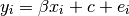
where  indexes the observations 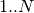. By replacing with a vector of
length
indexes the observations 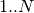. By replacing with a vector of
length  containing ones, we can rewrite this model in matrix form:
containing ones, we can rewrite this model in matrix form:
where:
 is a column vector containing 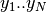
is a column vector containing 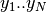 is a matrix shape (N, 2), where the first column is the vector 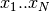, and the second column is a vector of ones.
is a matrix shape (N, 2), where the first column is the vector 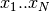, and the second column is a vector of ones.- is the parameter matrix, shape (2, 1), where 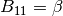 (above), and 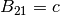 (above).
 is the vector of errors .
is the vector of errors .
is the design matrix. is the beta matrix.
So far we have a single regressor . Let us append another regressor to the model, 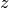, with values 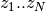
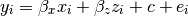
The corresponding design matrix now has three columns with the second
containng , the parameter matrix contains three entries
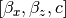. This is obviously multiple regression.
The contrast matrix¶
We can do hypothesis testing by applying a contrast vector to the parameter matrix. Let be a column vector. We express our hypothesis with:
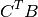
For example, on the null hypothesis of no effect of regressor  , we would
expect 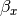 (== 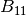) not to differ from 0. With 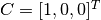,
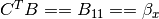. Thus results in a number (here )
that we expect to be 0 on the null hypothesis.
, we would
expect 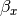 (== 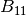) not to differ from 0. With 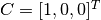,
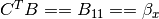. Thus results in a number (here )
that we expect to be 0 on the null hypothesis.
Although this example is trivial, the contrast vector obviously allows us to test more complicated things like the difference between the slopes for the first and second regressor, with 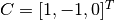.
Formulae and contrasts¶
In the examples above, it is very simple to go from the regressors in the formal model:
to the columns in the design matrix, and thence to the contrast matrix we need to test for our effects. However, imagine a model with more regressors, and where the regressors have handy names, say:
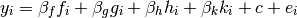
Quick, what’s the contrast for the slope of  greater than the slope for 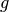?
You can work it out by running your finger over the model and counting where
and are in the regressor order, and get, correctly, 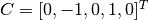. But, even with this small number of regressors, it’s probably easy to see
this could get ugly and error prone.
greater than the slope for 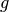?
You can work it out by running your finger over the model and counting where
and are in the regressor order, and get, correctly, 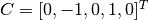. But, even with this small number of regressors, it’s probably easy to see
this could get ugly and error prone.